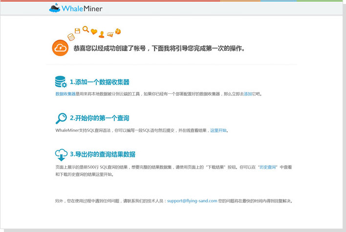
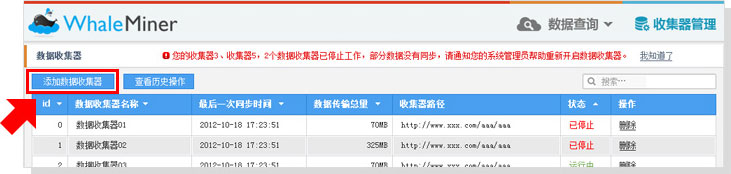
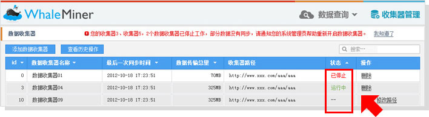

WhaleMiner是一个大数据的整合和分析平台，为用户提供多种工具使得大数据的存储，整合和分析变得傻瓜，并且不需要更多额外的学习成本和维护成本。
WhaleMiner是部署在云上的大数据分析的完整服务，我们称之为云BI，我们的解决方案使得用户可以聚焦在自身的业务和商业逻辑的分析上，而无需担心搭建分布式数据存储系统的成本，以及分布式系统的稳定性等运维事宜。而且也不需要用户的数据分析师学习新的语言或技能如现下正流行的map reduce脚本语言，才能从大数据中提取数据进行分析。简单来说，我们提供如下的三大服务：
● 数据整合和存储：
从用户的各台主机收取数据，提供云上的data warehouse。收取的数据包括结构化的数据，如存储在mysql数据库中的数据，以及非结构化的数据，如apache或应用程序产生的log日志，一般为文本文件数据。然后统一发送到云端进行数据整合等。这样对用户来说，跨主机/服务器的数据联合查询成为了可能。
● 类SQL的数据查询界面：
数据分析师可以对海量数据使用SQL语句来进行查询，查询结果可导出为csv文件或直接导入数据库作为中间结果进行二次查询。
● 数据查询调度：
大数据的挖掘往往不是一步到位的，而是需要从原始数据集生成中间结果集，然后再对中间结果集进行计算和处理。WhaleMiner支持这样数据处理workflow，用户可以基于WhaleMiner来建立数据pipeline，从而提供周期性的报表，或者使得自己原有的报表系统能够基于大数据工作。
● 登录：
请用户使用自己的常用邮箱登录系统，在首页上方的醒目位置，有我们的登录入口。

● 注册：
请用户使用自己的常用邮箱注册系统，此邮箱需要进行验证。
您完成注册和登录之后，进入系统，将看到我们的快速开始向导，他将带您快速地了解系统功能和工具。

数据收集器是安装在用户服务器上，用于收集数据的工具。它通过读取一个配置文件来获取用户对于数据收集的需求，配置文件的管理由用户在本地进行。一个数据收集器正常开始工作之后，需要在WhaleMiner中进行添加。添加成功后，一个数据收集器才开始正常工作。
一、配置
数据收集器的配置由配置文件完成，配置文件的详情请见由WhaleMiner工程师发送的说明文档。
二、管理
1）添加数据收集器
数据收集器在服务器上部署之前或部署之后，在WhaleMiner界面中进行添加，点击“数据收集器管理”，点击“添加数据收集器”即可完成添加。

这里请注意数据收集器的命名，数据收集器名称一旦保存成功就不可修改，并且名称不可重复。请为数据收集器选择一个有意义的，容易辨识的名称方便管理，如“联通一线服务器”，或IP地址等。
2）数据收集器的状态说明
● 运行中：数据收集器的正常状态。
● 已停止：数据收集器已经不再工作，需要检查原因。
● --：数据收集器添加成功后的初始状态，标明数据收集器还未在用户服务器上启动运行。

3）停用一个数据收集器
在用户服务器上运行命令停止掉数据服务器，然后在WhaleMiner界面中对此服务器进行删除操作即可。
数据导入数据的导入在数据收集器的配置文件中进行相关配置，用户可以控制哪些数据可以导入，导入的频率等。
● 查询语法
目前支持SQL的所有查询语法，如select, group by, count, where等
● 历史查询
用户最近执行的20条历史查询及查询结果将被系统自动保存，用户可以通过访问“历史查询”页面查看历史查询或下载历史查询结果。
● 常用查询
用户可以将自己常用的查询保存成为“常用查询”，在以后的SQL编辑中可以方便地查看和基于常用查询进行SQL语句编写，提高效率。
● 查询调度器
用户可通过此调度器来建立自己的查询pipeline，此功能暂不开放，有需要请联系我们的技术人员。
● 数据导出
在查询结果页，用户可将数据以csv文件的形式直接导出，也可获取结果文件的链接，黏贴到下载工具中进行下载。
您在使用过程中遇到任何问题，请联系我们的技术人员：support@flying-sand.com 您的问题将在最快的时间内得到回复解决。
现在就联系